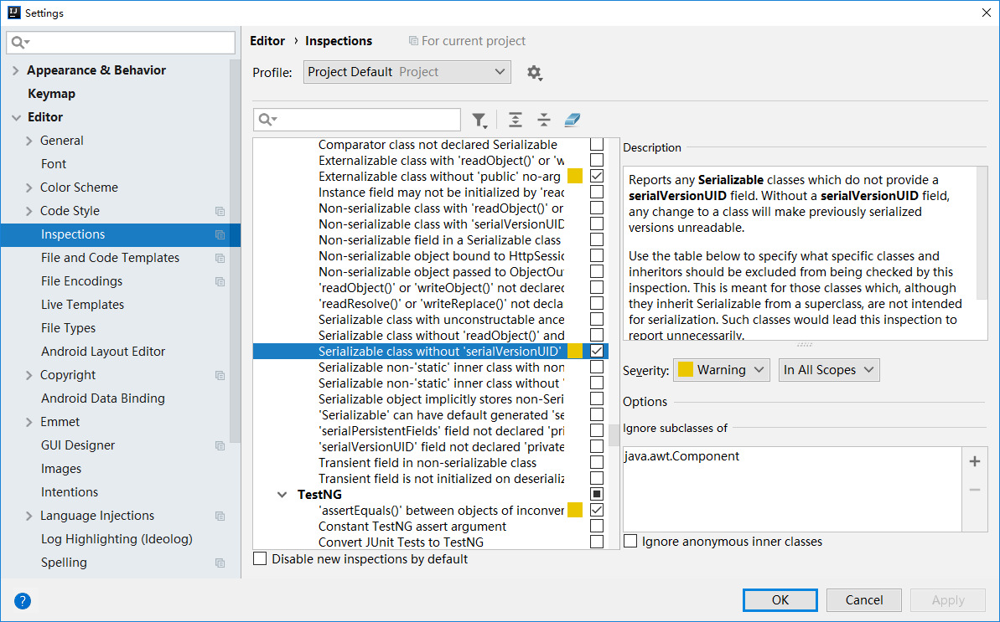

一级缓存
MyBatis 会在表示会话的 SqlSession 对象中建立一个简单的缓存，将每次查询到的结果结果缓存起来，当下次查询的时候，如果判断先前有个完全一样的查询，会直接从缓存中直接将结果取出，返回给用户，不需要再进行一次数据库查询了。
一级缓存是 SqlSession 级别的缓存。在操作数据库时需要构造 sqlSession 对象，在对象中有一个（内存区域）数据结构（HashMap）用于存储缓存数据。不同的 sqlSession 之间的缓存数据区域（HashMap）是互相不影响的。其作用域是同一个 SqlSession，在同一个 sqlSession 中两次执行相同的 sql 语句，第一次执行完毕会将数据库中查询的数据写到缓存（内存），第二次会从缓存中获取数据将不再从数据库查询，从而提高查询效率。当一个 sqlSession 结束后该 sqlSession 中的一级缓存也就不存在了。Mybatis 默认开启一级缓存。
二级缓存
二级缓存是 mapper 级别的缓存，多个 SqlSession 去操作同一个 Mapper 的 sql 语句，多个 SqlSession 去操作数据库得到数据会存在二级缓存区域，多个 SqlSession 可以共用二级缓存，二级缓存是跨 SqlSession 的。其作用域是 mapper 的同一个 namespace，不同的 sqlSession 两次执行相同 namespace下的 sql 语句且向 sql 中传递参数也相同即最终执行相同的 sql 语句，第一次执行完毕会将数据库中查询的数据写到缓存（内存），第二次会从缓存中获取数据将不再从数据库查询，从而提高查询效率。 Mybatis 默认没有开启二级缓存需要在 setting 全局参数中配置开启二级缓存。
开启二级缓存
在 Spring Boot 配置文件中开启 MyBatis 二级缓存，配置代码如下：
1
2
3
| mybatis:
configuration:
cache-enabled: true
|
设置实体类序列号
因为数据需要放在Redis里面必然走网络传输，所以实体类一定要序列化，有序列号。
private static final long serialVersionUID = 8289770415244673535L;
IDEA提示生成序列号
默认情况下 Intellij IDEA 不会提示继承了 Serializable 接口的类生成 serialVersionUID 的警告。如果需要生成 serialVersionUID，需要手动配置。
File -> Settings -> Inspections -> Serialization issues -> Serialization class without ‘serialVersionUID’

创建相关工具类
实现 Spring ApplicationContextAware 接口，用于手动注入 Bean
创建一个名为 ApplicationContextHolder 的工具类，代码如下：
1
2
3
4
5
6
7
8
9
10
11
12
13
14
15
16
17
18
19
20
21
22
23
24
25
26
27
28
29
30
31
32
33
34
35
36
37
38
39
40
41
42
43
44
45
46
47
48
49
50
51
52
53
54
55
56
57
58
59
60
61
62
63
64
65
66
67
68
69
70
71
72
73
74
75
76
77
|
import org.apache.commons.lang3.Validate;
import org.slf4j.Logger;
import org.slf4j.LoggerFactory;
import org.springframework.beans.BeansException;
import org.springframework.beans.factory.DisposableBean;
import org.springframework.context.ApplicationContext;
import org.springframework.context.ApplicationContextAware;
import org.springframework.stereotype.Component;
@Component
public class ApplicationContextHolder implements ApplicationContextAware, DisposableBean {
private static final Logger logger = LoggerFactory.getLogger(ApplicationContextHolder.class);
private static ApplicationContext applicationContext;
public static ApplicationContext getApplicationContext() {
assertContextInjected();
return applicationContext;
}
public static <T> T getBean(String name) {
assertContextInjected();
return (T) applicationContext.getBean(name);
}
public static <T> T getBean(Class<T> clazz) {
assertContextInjected();
return applicationContext.getBean(clazz);
}
public void destroy() throws Exception {
logger.debug("清除 SpringContext 中的 ApplicationContext: {}", applicationContext);
applicationContext = null;
}
public void setApplicationContext(ApplicationContext applicationContext) throws BeansException {
ApplicationContextHolder.applicationContext = applicationContext;
}
private static void assertContextInjected() {
Validate.validState(applicationContext != null, "applicationContext 属性未注入，请在 spring-context.xml 配置中定义 ApplicationContextHolder");
}
}
|
实现 MyBatis Cache 接口，用于自定义缓存为 Redis
创建一个名为 RedisCache 的工具类，代码如下：
1
2
3
4
5
6
7
8
9
10
11
12
13
14
15
16
17
18
19
20
21
22
23
24
25
26
27
28
29
30
31
32
33
34
35
36
37
38
39
40
41
42
43
44
45
46
47
48
49
50
51
52
53
54
55
56
57
58
59
60
61
62
63
64
65
66
67
68
69
70
71
72
73
74
75
76
77
78
79
80
81
82
83
84
85
86
87
88
89
90
91
92
93
94
95
96
97
98
99
100
101
102
103
104
105
106
107
108
109
110
111
112
113
114
115
116
117
118
119
120
121
122
123
124
125
126
127
128
129
| import org.apache.ibatis.cache.Cache;
import org.slf4j.Logger;
import org.slf4j.LoggerFactory;
import org.springframework.data.redis.core.RedisCallback;
import org.springframework.data.redis.core.RedisTemplate;
import org.springframework.data.redis.core.ValueOperations;
import java.util.concurrent.TimeUnit;
import java.util.concurrent.locks.ReadWriteLock;
import java.util.concurrent.locks.ReentrantReadWriteLock;
public class RedisCache implements Cache {
private static final Logger logger = LoggerFactory.getLogger(RedisCache.class);
private final ReadWriteLock readWriteLock = new ReentrantReadWriteLock();
private final String id;
private RedisTemplate redisTemplate;
private static final long EXPIRE_TIME_IN_MINUTES = 30;
public RedisCache(String id) {
if (id == null) {
throw new IllegalArgumentException("Cache instances require an ID");
}
this.id = id;
}
@Override
public String getId() {
return id;
}
@Override
public void putObject(Object key, Object value) {
try {
RedisTemplate redisTemplate = getRedisTemplate();
ValueOperations opsForValue = redisTemplate.opsForValue();
opsForValue.set(key, value, EXPIRE_TIME_IN_MINUTES, TimeUnit.MINUTES);
logger.debug("Put query result to redis");
} catch (Throwable t) {
logger.error("Redis put failed", t);
}
}
@Override
public Object getObject(Object key) {
try {
RedisTemplate redisTemplate = getRedisTemplate();
ValueOperations opsForValue = redisTemplate.opsForValue();
logger.debug("Get cached query result from redis");
return opsForValue.get(key);
} catch (Throwable t) {
logger.error("Redis get failed, fail over to db", t);
return null;
}
}
@Override
@SuppressWarnings("unchecked")
public Object removeObject(Object key) {
try {
RedisTemplate redisTemplate = getRedisTemplate();
redisTemplate.delete(key);
logger.debug("Remove cached query result from redis");
} catch (Throwable t) {
logger.error("Redis remove failed", t);
}
return null;
}
@Override
public void clear() {
RedisTemplate redisTemplate = getRedisTemplate();
redisTemplate.execute((RedisCallback) connection -> {
connection.flushDb();
return null;
});
logger.debug("Clear all the cached query result from redis");
}
@Override
public int getSize() {
return 0;
}
@Override
public ReadWriteLock getReadWriteLock() {
return readWriteLock;
}
private RedisTemplate getRedisTemplate() {
if (redisTemplate == null) {
redisTemplate = ApplicationContextHolder.getBean("redisTemplate");
}
return redisTemplate;
}
}
|
Mapper 接口中增加注解
1
2
3
| @CacheNamespace(implementation = RedisCache.class)
public interface TbSysUserMapper extends MyMapper<TbSysUser> {
}
|